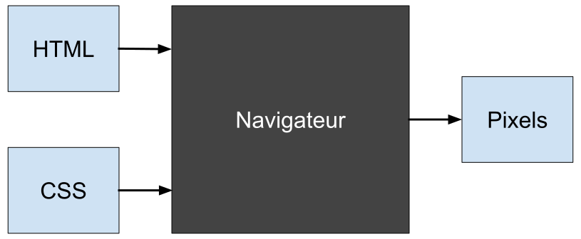
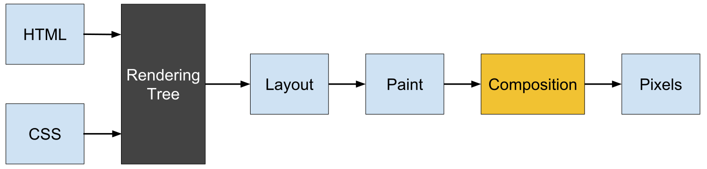
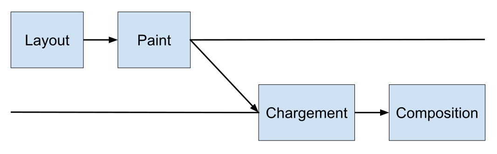
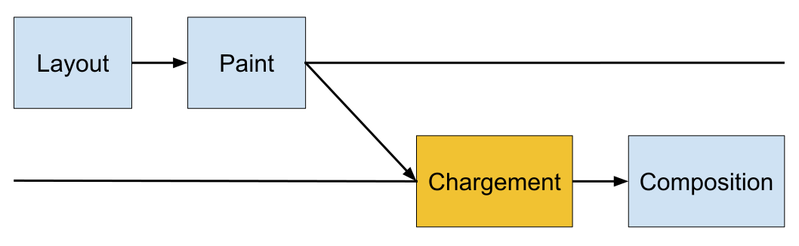
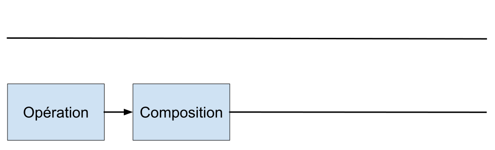
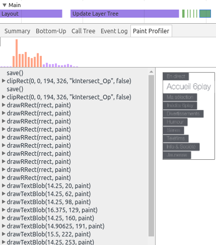

Les performances de rendu CSS
15 min pour comprendre les enjeux !Pourquoi les performances CSS ?
Pour obtenir des interactions fluides
- Défilement (scroll)
- Transition et animation CSS
- Manipulation du contenu
Pourquoi les performances CSS ?
Pour l'image, l'immersion et l'accessibilité !
Parce que le rendu était trop lent, ils ont diminué l'ombre dans leur design.
— airbnb, bit.ly/airbnb-shadowLe rendu CSS est l'un des trois principaux facteurs de lenteurs JavaScript.
— Opera, bit.ly/opera-css-perfsPourquoi les performances CSS ?
Ne pas faire de transition ou d'animation CSS avec une autre propriété que
opacitytransform
(translation, rotation, redimensionnement, ...)filter
(flou, luminuosité, contraste, niveau de gris, ...)
Pourquoi les performances CSS ?
On va essayer de diminuer la zone "boîte noire"
Pourquoi les performances CSS ?
Ne pas faire de transition ou d'animation CSS avec une autre propriété que
opacitytransformfilter
Thomas Zilliox
Développeur freelanceComment les navigateurs
passentDu CSS aux pixels
Les navigateurs web ont, à peu près,
deux fils d'exécution pour le rendu
- Le principal (Main)
- Celui de composition (Compositor)
Du CSS aux pixels
Le fil principal se charge de
- Calculer les règles CSS
- La mise en page (Layout / Reflow)
- Calculer chaque pixels (Painting / Draw)
Du CSS aux pixels
Le fil de composition se charge principalement de dessiner les pixels sur l'écran
Objectif 16ms
Objectif 16ms
Chaque frame doit prendre maximum 16ms pour garder une fréquence d'images à 60fps
— Youtube, youtu.be/pfiHFqnPLZ4Objectif 16ms
Le premier rendu d'un élément
Objectif 16ms
Lorsqu'on anime la largeur d'un élément, on déclenche un re-layout
Aucune autre action utilisateur n'est possible pendant la mise en page.
— Google, bit.ly/layout-engineObjectif 16ms
Lorsqu'on anime une transformation sur un élément, on reste dans la composition
 — Paul Lewis (Google), https://csstriggers.comObjectif 16ms
Ne pas faire de transition ou d'animation CSS avec une autre propriété que
opacitytransformfilter
Des outils
pourDes outils pour investiguer
Détecter les reflows (Console de Firefox)
Des outils pour investiguer
Détecter les repaints (Console de Chrome)
Des outils pour investiguer
Investiguer les repaints (Timeline de Chrome)
Des outils pour investiguer
Les éléments fixes sont redessinés au défilement
Des retours d'expériences
Des retours d'expériences
Vous pouvez créer un nouveau layer en appliquant perspective(1px)*
* Attention quand même aux hacks magiques !
Des retours d'expériences
Si vous avez une image de fond fixe au défilement
- Séparer l'image sur un élément à part
- Créer un nouveau layer pour cet élément
Des retours d'expériences
Pour animer l'ajout d'une ombre sur un élément
- Séparer l'ombre sur un élément à part
- Animer l'opacité de cet élément
 — Tobias Ahlin,
http://bit.ly/animate-shadow
— Tobias Ahlin,
http://bit.ly/animate-shadow
Conclusion
Conclusion
Ne pas faire de transition ou d'animation CSS avec une autre propriété que
opacitytransformfilter
Merci ;)
Visualiser le reflow
Les sources du reflow
Elle est déclanchée par
- Modification du DOM, dont le contenu
- Prise de mesure
(offsetHeightougetComputedStyle) - Modification de l'attribut class
- Modification des styles CSS
- Le redimenssionnement de la fenêtre
- Le scroll
Les retours d'expérience
Créer un nouveau layer
translateZ(0)perspective(1px)will-change*
* Mais attention will-change will change